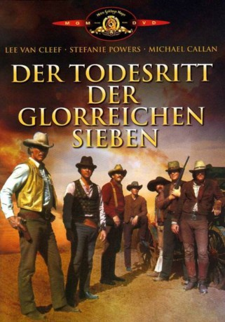

#7114 Der Todesritt der glorreichen Sieben
Alternativ: The Magnificent Seven Ride!
 
 IMDB-Wertung: 5.6 / 10
IMDB-Wertung: 5.6 / 10  Metascore: 0
Metascore: 0 
Der Revolverheld Chris Gunn (Lee Van Cleef) ist Marshal in einer kleinen texanischen Stadt. Die Freilassung des Häftlings Donovan bereut er schon bald: Nach einem Bankraub schießt der Ganove den Marshal an und entführt dessen Frau. Gunn nimmt die Verfolgung auf und trifft Frauen, die unter der Führung von Laurie (S. Powers) den Tod ihrer Männer rächen wollen...
Jahr: 1972
Dauer: 96 Minuten
FSK: 12
Land: USA Studio: United Artists An MGM CompanyTonspuren: DD2.0 - ,
Untertitel:
Auflösung: 1080p (1920x1040) Größe: 7598 MB
Genre: Action, Western
Regisseur: George McCowan
Drehbuch: Arthur Rowe
Soundtrack:
Darsteller:
Datei: X:\HD-Western-Collections\Glorreichen Sieben\Todesritt der glorreichen Sieben, Der (1972, FSK12, 1920x1040).mkv seit 28.09.2017
Festplatte: HD Eastern+Western
 Es gibt insgesamt 8 Filme in der Gruppe 'HD-Western-Collections\Glorreichen Sieben'
Es gibt insgesamt 8 Filme in der Gruppe 'HD-Western-Collections\Glorreichen Sieben'